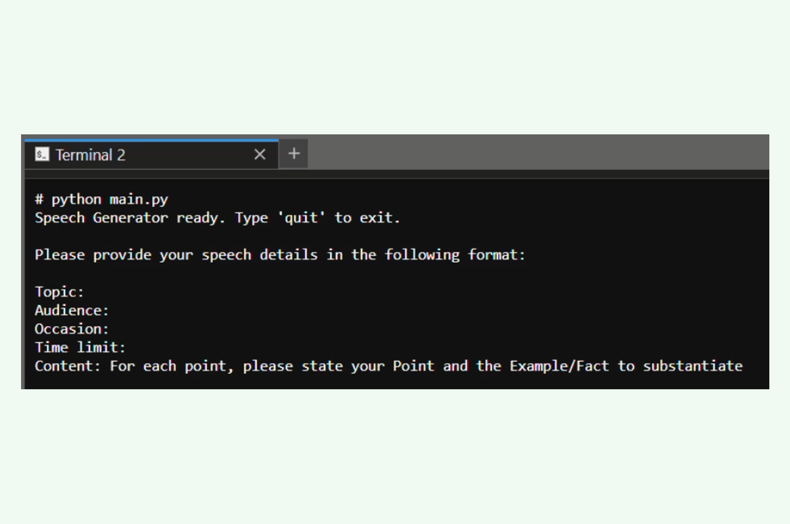

Hi! I'm Yin Yun, a data science professional blending business acumen with strong technical expertise.
Graduated in April 2026 with a Master of IT in Business (Data Science & Analytics) from Singapore Management University, I have hands-on experience building machine learning models, agentic AI systems, and end-to-end data pipelines on large, complex datasets to generate actionable insights.
Prior to my master's, I built an 8-year track record delivering data-driven, user-centric products across 16 markets, working closely with cross-functional teams.
I now combine product thinking with analytical expertise to uncover insights and drive impactful, data-driven business outcomes.
Feel free to reach out if you're looking for someone who can bridge business and data.
LinkedIn Github About
Featured projects
Some key projects I have worked on. For more projects please see all:
Speech Generation Multi-Agent System
Data Science | Mar 2026
Developed a multi-agent LLM system on LangGraph to generate high quality speeches from outlines, incorporating fact-checking and validation loops; deployed in Docker. Collaborated in a team of 4.

What others say
Despite being new to the industry, [Yin Yun] demonstrated strong analytical thinking and curiosity to the business. I was particularly impressed by her attention to details, clear presentation of insights and ability to handle time sensitive tasks. […] She demonstrated excellent collaboration and communications in engaging stakeholders, asking the right questions to connect analytical insights with the business context.
Gong Yunsheng
Director of Analytics and Optimization
It's very hard to deal with so much work in multi-product lines in identity direction, but Yinyun and her team achieved some meaningful results in Address user experience and support business team well in many projects.
Kevin Niu
Product Management Lead
There're several aspect that I really enjoy working with Yinyun.
- She keep good track of the docs, […] After reading them, I feel that I've gained a very clear understanding about our product / domain.
- She's really dedicated into work & her domain, with a very clear understanding on why we do something.
Song Yang Yu
Software Engineer
Yin Yun is a user-centric product manager and fast learner. […] [We] managed to deliver qualified product solutions and UX roadmaps together.
Wang Xinling
Principal Designer